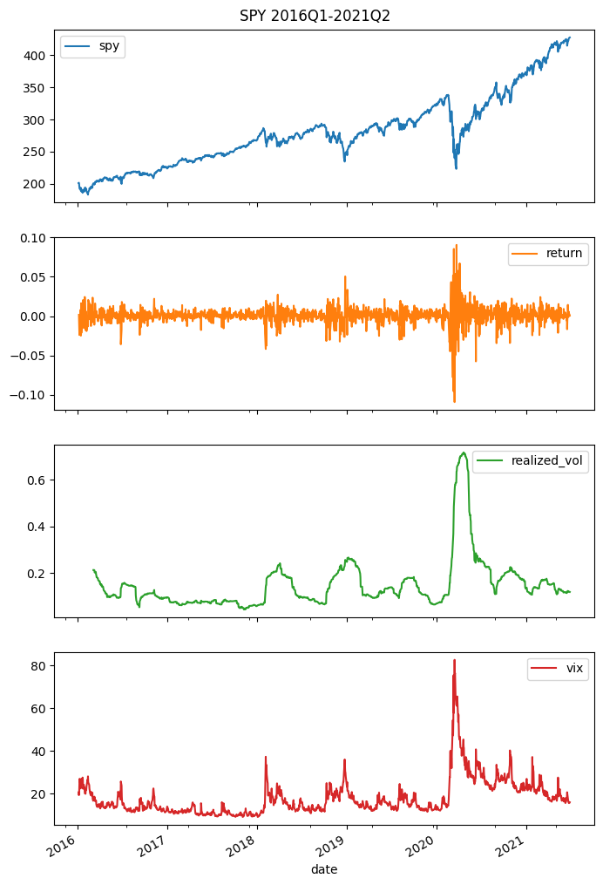
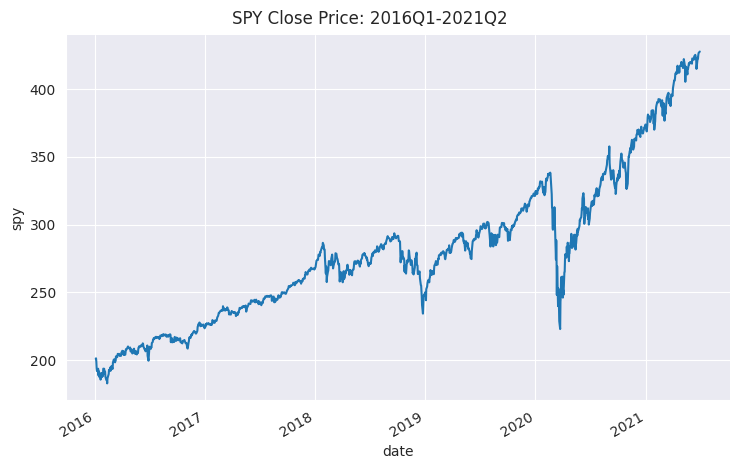
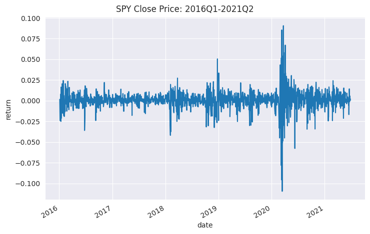
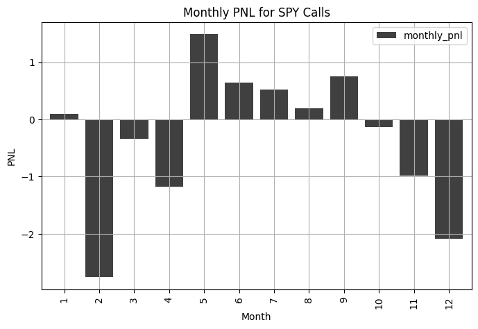
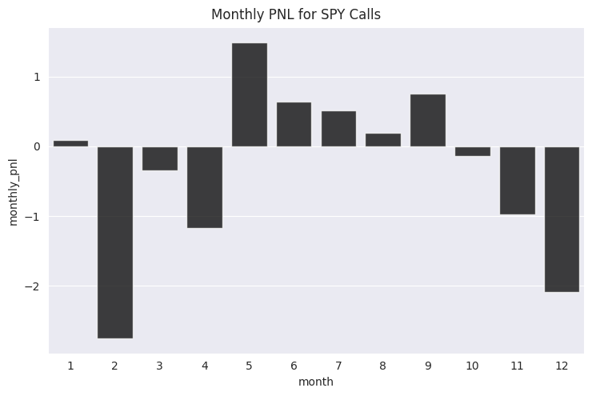
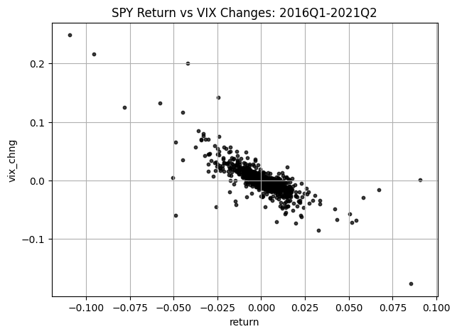
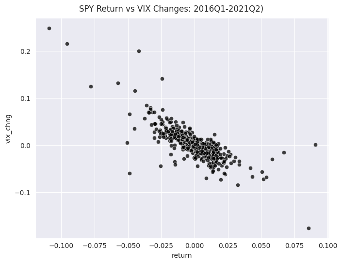

import numpy as np
import pandas as pd
import yfinance as yf
yf.pdr_override()
from pandas_datareader import data as pdr
import matplotlib.pyplot as plt
import seaborn as sns
%matplotlib inline12 Visualization with seaborn
In the previous visualization we used the built-in plotting capabilities of pandas to create some useful financial graphs. In this tutorial, we recreate those plots using the seaborn visualization package.
Like the pandas visualization functionality, seaborn is built on top of the matplotlib package. As previously discussed, matplotlib allows for low level control over visualizations, which makes it very flexible. However, this flexibility comes at the cost of complexity. In contrast, seaborn provides a high level interface that allows for easy implementations of attractive graphs.
The focus of seaborn is general statistical data visualizations, whereas pandas is more tailor-made for financial time series.
This tutorial is not meant to be a comprehensive introduction to seaborn. Rather, my intention is to simply show you the code for a few graphs types that I have found useful in finance. For a thorough introduction to seaborn, I recommend working through the official tutorials that are linked in the Further Reading section - they are extremely well done, but quite long.
12.1 Loading Packages
Let’s load the packages that we will be using.
12.2 Line Graph - Prices, Returns, Realized Vol, VIX
Let’s read-in and wrangle some data for SPY and VIX during 2016Q1-2021Q2.
df_spy = pdr.get_data_yahoo(['SPY', '^VIX'], start='2016-01-01', end='2021-06-30')
df_spy = df_spy.round(2)
df_spy = df_spy['Close'].reset_index()
df_spy.rename(columns={'Date':'date','SPY':'spy','^VIX':'vix'}, inplace=True)
df_spy.head()[*********************100%***********************] 2 of 2 completed| date | spy | vix | |
|---|---|---|---|
| 0 | 2016-01-04 | 201.02 | 20.70 |
| 1 | 2016-01-05 | 201.36 | 19.34 |
| 2 | 2016-01-06 | 198.82 | 20.59 |
| 3 | 2016-01-07 | 194.05 | 24.99 |
| 4 | 2016-01-08 | 191.92 | 27.01 |
Next, let’s add returns and realized_vol to the df_spy.
df_spy['return'] = df_spy['spy'] / df_spy['spy'].shift(1) - 1
df_spy['realized_vol'] = df_spy['return'].rolling(42).std() * np.sqrt(252)
df_spy.head()| date | spy | vix | return | realized_vol | |
|---|---|---|---|---|---|
| 0 | 2016-01-04 | 201.02 | 20.70 | NaN | NaN |
| 1 | 2016-01-05 | 201.36 | 19.34 | 0.001691 | NaN |
| 2 | 2016-01-06 | 198.82 | 20.59 | -0.012614 | NaN |
| 3 | 2016-01-07 | 194.05 | 24.99 | -0.023992 | NaN |
| 4 | 2016-01-08 | 191.92 | 27.01 | -0.010977 | NaN |
12.2.1 Graphing with pandas
Recall that pandas allows us to quickly graph these four time-series in a single figure.
df_spy. \
plot(
x = 'date',
y = ['spy', 'return', 'realized_vol', 'vix',],
subplots = True,
figsize=(8, 12),
title='SPY 2016Q1-2021Q2',
);
plt.subplots_adjust(top=0.96); # this adjusts the location of the title
12.2.2 Graphing with seaborn
Let’s create similar graphs with seaborn. Creating all four plots in a single graph is not as easy with seaborn and the code is a little confusing. To keep things simple we will recreate two of the plots separately.
Here is the code that generates the graph of the daily prices.
with sns.axes_style('darkgrid'):
g = sns.relplot(x='date', y='spy', kind='line', data=df_spy, aspect=1.5)
g.fig.autofmt_xdate()
# creating and tweaking the title
g.fig.suptitle('SPY Close Price: 2016Q1-2021Q2')
plt.subplots_adjust(top=0.93);
And here is the code produces the graph of the daily returns.
with sns.axes_style('darkgrid'):
g = sns.relplot(x='date', y='return', kind='line', data=df_spy, aspect=1.5)
g.fig.autofmt_xdate()
# creating and tweaking the title
g.fig.suptitle('SPY Close Price: 2016Q1-2021Q2');
plt.subplots_adjust(top=0.93);
12.3 Bar Graph - Monthly SPY Call PNLs
Our next data set consists of monthly pnls from the call trades detailed in seaborn_monthly_pnl_bar.csv.
df_monthly_bar = pd.read_csv('seaborn_monthly_pnl_bar.csv')
df_monthly_bar.head()| month | year | monthly_pnl | |
|---|---|---|---|
| 0 | 1 | 2018 | 0.091963 |
| 1 | 2 | 2018 | -2.759090 |
| 2 | 3 | 2018 | -0.340270 |
| 3 | 4 | 2018 | -1.174222 |
| 4 | 5 | 2018 | 1.487206 |
12.3.1 Graphing with pandas
Recall that this code creates the barplot of the pnls by month using pandas.
ax = \
(df_monthly_bar
.plot(
x = 'month',
y = ['monthly_pnl'],
kind ='bar',
color='k', # color is grey
grid=True, # adding a grid
alpha=0.75, # translucence
width=0.8, # increasing the width of the bars
title='Monthly PNL for SPY Calls',
figsize=(8, 5), # modifying the figure size
));
ax.set_xlabel("Month"); # x-axis label
ax.set_ylabel("PNL"); # y-axis label
12.3.2 Graphing with seaborn
Here is the code that produces a similar graph in using seaborn.
with sns.axes_style('darkgrid'):
g = sns.catplot(
x='month'
, y='monthly_pnl'
, kind='bar'
, color='black'
, alpha=0.75
, height=5
, aspect = 1.5
, data=df_monthly_bar
);
plt.subplots_adjust(top=0.93);
g.fig.suptitle('Monthly PNL for SPY Calls');
12.4 Scatter Plot - SPY Returns vs VIX Change (implied leverage)
Let’s add vix_chng to df_spy and change the units to decimals.
df_spy['vix_chng'] = df_spy['vix'].diff()
df_spy['vix'] = df_spy['vix'] / 100
df_spy['vix_chng'] = df_spy['vix_chng'] / 100
df_spy.head()| date | spy | vix | return | realized_vol | vix_chng | |
|---|---|---|---|---|---|---|
| 0 | 2016-01-04 | 201.02 | 0.2070 | NaN | NaN | NaN |
| 1 | 2016-01-05 | 201.36 | 0.1934 | 0.001691 | NaN | -0.0136 |
| 2 | 2016-01-06 | 198.82 | 0.2059 | -0.012614 | NaN | 0.0125 |
| 3 | 2016-01-07 | 194.05 | 0.2499 | -0.023992 | NaN | 0.0440 |
| 4 | 2016-01-08 | 191.92 | 0.2701 | -0.010977 | NaN | 0.0202 |
12.4.1 Graphing with pandas
Here is the pandas code that creates scatter plot of returns vs VIX changes.
df_spy.plot.scatter(
x = 'return',
y = 'vix_chng',
grid=True ,
c='k',
alpha=0.75,
s=10, # changing the size of the dots
figsize=(7, 5),
title='SPY Return vs VIX Changes: 2016Q1-2021Q2',
);
12.4.2 Graphing with seaborn
Here is the code for a similar graph using seaborn.
with sns.axes_style('darkgrid'):
g = sns.relplot(
x = 'return',
y = 'vix_chng',
data = df_spy,
color = 'black',
alpha = 0.75,
height = 5.5,
aspect = 1.3,
);
plt.subplots_adjust(top=0.93);
g.fig.suptitle('SPY Return vs VIX Changes: 2016Q1-2021Q2)');
12.5 Further Reading
Python Data Science Handbook - 4.14 - Visualization with Seaborn
Seaborn Official Tutorials - https://seaborn.pydata.org/tutorial.html (very good, but long)